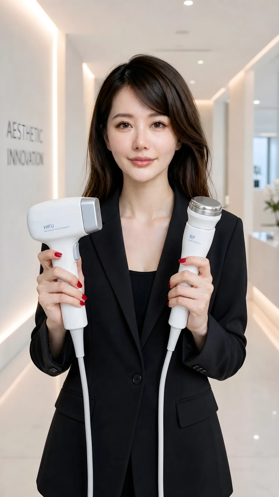

65 歲以上女性 17.4% 有骨質疏鬆：停經後的荷爾蒙治療時間窗，你問過醫師嗎？
10 月初，FB 上一個親子生活粉專貼了一個問題：「更年期初期全身都在痛嗎？像發燒時骨頭肌肉不舒服」
共 90 篇，由新到舊排列。慢慢讀，把醫美選擇從焦慮裡拿回來。
10 月初，FB 上一個親子生活粉專貼了一個問題：「更年期初期全身都在痛嗎？像發燒時骨頭肌肉不舒服」

這個禮拜，Threads 上有人寫了一篇停用後的後悔文。發文的人說停用後食量變大，體重胖回約 5 公斤，還開始掉髮。結尾那句是：「現在好後悔，早知道不要亂跟風」。

「100 天法令紋運動，沒效果就上醫美。」這是 Threads 上一則貼文的標題。發文的人每天記錄進度，我看到的那一則，寫著第 38 天。

很多人在決定做隆乳之前，會花一兩個月爬心得文。然後傳訊息來問我一句：「蘇菲，我收藏了好幾篇，每一篇都說很自然、很滿意。我到底該信哪一篇？」

九月底，一位網友在 Threads 上寫：「最近一直看到『饅化』覺得天啊也太可怕，為什麼會饅化？真的只是玻尿酸打太多嗎？」
診間常聽到一種問法。「我下個月要出國，上週剛做完療程，臉有點不一樣了。護照上那張照片還能用嗎？會不會在機場被擋？」
9 月 2 日下午兩點，疾管署署長在臨時記者會上說了一句話：「此為國內時隔九年再爆出診所 C 肝群聚事件。」

蘇菲從醫學中心護理與心臟醫材跟刀經驗出發，解釋為什麼醫美文章總把風險、限制與不適合的人放在效果前面。
2026 起，美容醫學服務的核准、登記與備查資訊更透明；動刀前查機構項目、醫師資格與急救後送，不要把自願認證誤當唯一門檻。

醫美糾紛發生前，先留病歷與同意書、逐項收費明細、同角度術前術後照片；資料越完整，後續溝通與調解越有依據。

術前別只回答有沒有慢性病；處方藥、成藥、保健食品、過敏史與近期治療都要完整告知，是否停用與停多久交給醫師判斷。
唯一、首創、最專業、保證、完全根治與永不復發，都是醫療廣告常見紅旗；平台有藍勾勾，也不代表內容合法或有證據。
醫療機構若以無息貸款、分期付款或低自備款作為招攬病人的宣傳手段，可能違反醫療法；諮詢時先把總價與療程必要性拉回來。
預付美容療程超過 5 萬元，先確認契約適用範圍、履約保障、退費期限與每次消費紀錄；若涉及醫療行為，還要另外查醫療法規。
遇到永久、保證、一次見效與排毒等宣稱，先查核合法資格、核准用途、研究設計、風險與替代方案。
好的健康管理協助你整理目標、紀錄與追蹤，但不越界診斷、開藥或取代醫師；先看角色邊界再決定是否需要。
性功能或活力下降可能牽涉心血管、代謝、荷爾蒙、藥物與心理因素；別把複雜問題交給單一自費療程。
療程效果受技術、劑量、個人體質與術後照護共同影響；真正有效的做法，是照醫囑、防曬、睡眠與按時追蹤。
靜脈注射能快速提高血中濃度，但高濃度不等於一般保健、美白或抗老效果更好；適應症與風險才是重點。
持續疲勞不是單靠醫美或一種療程就能解決；先排除睡眠、貧血、甲狀腺、藥物與身心因素，再談介入。
AI 膚質分析讓療程更可追蹤，也帶來資料隱私、模型誤差與資訊安全的新問題。

抗老研究正走向健康壽命、代謝與再生醫學；但實驗結果不等於成熟療程，商業宣稱仍要看人體證據。
術後追蹤、緊急聯絡與不良反應處理，都是療程品質的一部分，也應在付款前問清楚。

2026 醫美規範調整後，選診所要查醫師資格、合法療程與器材，並確認知情同意及術後處理機制。
輕醫美恢復期較短，不代表零風險；雷射、微針與注射仍需要醫師評估、合格操作與術後照護。

判斷醫美醫師不能只看執照或科別標籤，還要看法定資格、相關訓練與該項療程的實際經驗。

低價醫美不一定省錢；真正要查的是耗材、設備、醫師資格、療程內容與術後處理機制。

審美不是個人選擇那麼簡單，它也被平台、階級、關係與醫美產業共同塑形；真正的自由，是知道自己為什麼想變。

做醫美前，消費者該保護的不只是一張臉，還有知情同意、耗材來源、醫師資格與術後責任。

保養型醫美不是追求一次大改造，而是把老化速度、膚質與修復能力納入長期管理。

不同療程解決的是不同層次問題；先分清骨相、軟組織、膚質與動態，才不會把所有問題都交給同一種療程。

醫美最貴的常常不是報價，而是修復、時間、恢復期與資訊不對稱；便宜方案背後可能藏著更大的成本。

Profhilo 不是傳統填充物，而是把醫美從補洞思維推向生物重塑；它追求的是皮膚品質，而不是臉變大。
玻尿酸打不出效果，常常不是材料不夠，而是支撐層次錯了；真正該問的是骨膜層與底層結構。

看到「一次年輕十歲」「幹細胞回春」先不要心動；真正該問的是證據、合法性、來源與風險。

男性醫美不是小眾市場，而是更理性、更數據化，也更容易一次做太多的高成長需求。

口服瘦瘦針讓減重更方便，但臉部脂肪、肌肉與膠原流失不會因為換成口服就消失。

打了十次皮秒斑還在，問題不一定是機器，而是你一開始就沒有分清楚那塊斑到底是什麼。

漏尿、乾癢、性交疼痛不是只能忍；停經後的身體變化需要被說出來，也需要被正確處理。

全球醫美正在從過度填充退回自然感；真正高級的臉，不是看起來被填滿，而是看不出做過。
停經後的乾、痛、漏尿不是「老了正常」，而是有名字、有解法的 GSM；沉默不是必要代價。
做醫美前最重要的不是問哪台機器最新，而是先確認自己真正要改善什麼，以及眼前方案如何對應你的結構與長期規劃。

音波偏向深層支撐與輪廓，電波偏向真皮緊實與膚質；先判斷下垂、鬆弛與脂肪分布，才能避免選錯機器。

單極與雙極電波的能量路徑、作用深度和適用問題不同；不要只看療程名稱與價格，要看你的問題位在哪一層。

玻尿酸長期疊加可能讓臉部比例與動態逐漸失真；比繼續補量更重要的，是先停、評估殘留與重新規劃結構。
傳統電波與微針電波不是升級關係，而是作用深度、治療目標與恢復期不同；先分清鬆弛、脂肪與膚質問題再選療程。

快速減重可能同時流失脂肪與瘦組織，讓臉部凹陷、鬆弛更明顯；減重期間應同步管理營養、肌肉與臉部變化。
玻尿酸不能只比品牌、價格與維持期；顆粒特性、安全資料、注射層次與醫師判斷，才是選擇材料時真正要問的事。

居家美容儀可以維護，不能取代診所治療；購買前要看能量參數、研究證據與自己的真實使用目標。
侵入性醫美不是熟人推薦就能放心；查診所、查醫師執照、看耗材批號，是進行注射前最低限度的自保。
Retatrutide 的高減重潛力引發期待，也提醒我們：試驗性療法、資源公平與未知風險不能被搶先體驗掩蓋。

Klotho 讓長壽醫學看見主動修復的可能，但人體證據與長期安全性仍待確認，現在更重要的是管理健康壽命。
海外整鼻看似便宜，真正昂貴的是缺乏病歷、耗材不明與回台後無人願意承接的修復風險。

從診間偷拍與停業爭議談醫美隱私：進療程室前，消費者必須查人、看空間並保留完整紀錄。

台灣有世界級醫師，不代表每家診所都有同樣水準；真正該查的是醫師背景、持續進修與風險說明。
EECP 與 ILIB 的協同概念，代表未來循環抗衰老不再靠單一療法，而是整合式健康資產管理。

從 Lumenis 與 SILARIOUS 談醫美設備代差：消費者不只要問價格，也要問影像導航與安全標準。
關之琳僵臉話題提醒我們：飽滿不等於年輕，過度填充可能讓臉失去動態與高級感。

從黃曉明被追問醫美談名人年齡管理：比做不做更重要的，是真實性與不過度的長期策略。
ILIB 靜脈雷射用光生物調節討論細胞能量、循環與慢性發炎，重點是理解它不是一次返老還童的神話。

EECP 體外反搏不是按摩，而是從心血管循環切入的抗衰老管理，適合先理解機制與適用邊界。
從孫淑媚拔牙矯正談隱性醫美：真正耐老的關鍵，不只是打針修補，而是長期結構性投資。
長壽醫學把抗老從表面修補推向細胞管理，未來醫美會更靠近預防醫學與健康壽命。

怕失敗、怕痛、怕被偷拍、怕被推銷，先把恐懼說出來，才有機會做出清醒選擇。

長期高壓會透過皮質醇影響膠原蛋白、屏障與循環，讓疲憊直接寫在臉上。

醫美診所隱私危機提醒我們，療程前要檢查空間、看清同意書，並保護自己的私密界線。
迷信名醫光環前，先看醫師如何溝通風險、處理併發症，以及術後是否願意負責。
口服 Wegovy 與新一代減重藥讓減重更方便，但肌肉流失、臉凹與反彈風險仍然不能忽略。

孫淑媚開球被讚凍齡，真正值得學的不是神秘醫生，而是防曬、睡眠、運動與日常自律。
醫美規劃應該像資產管理一樣，有紀錄、節奏、預算、風險與停損點，而不是每次被活動推著買。

價格很重要，但醫美諮詢若只問價格，容易忽略適應症、風險、材料、恢復期與修正方案。

自然感醫美不是少做而已，而是比例、表情、皮膚質地與臉部邊界都能一起成立。

打針、能量療程與手術各自處理不同層次。先看皮膚、脂肪、筋膜、骨架與期待值，再談方案。

再生醫美與外泌體等話題越熱門，消費者越需要確認產品來源、合法性、施作紀錄與風險說明。
PN、多核苷酸與肌底修復常被包裝成神奇療程，真正要看的是皮膚狀態、目的與搭配順序。

臉部超載常見於長期填充、反覆補量與忽略結構支撐。先停下來盤點，不一定要繼續加。

數位影像紀錄能幫助醫美諮詢從感覺回到證據，避免只靠話術與鏡子焦慮做決定。

法令紋不一定是缺肉，常常是中臉支撐、韌帶與脂肪墊位移造成的結構問題。
從今天整理的醫美趨勢矩陣出發，拆解再生醫美、細胞修復與結構歸位的判斷順序。

整形外科和醫美診所不是同一個分類。本文用手術風險、醫師資格、麻醉與修復能力，整理消費者進診所前該問的五句話。